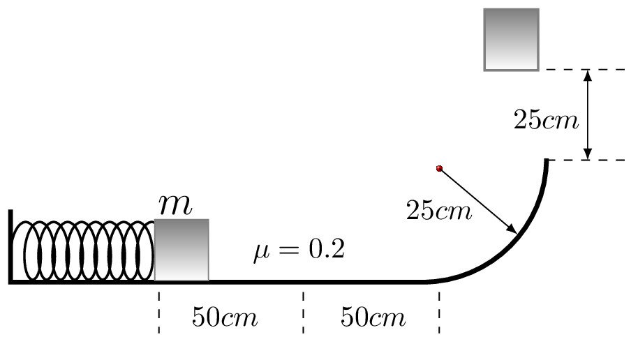
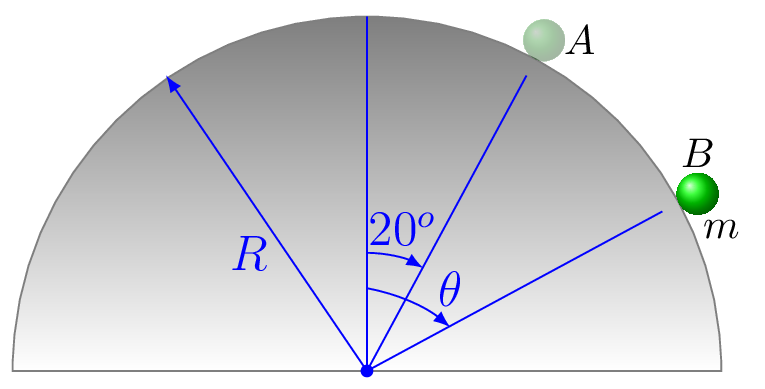
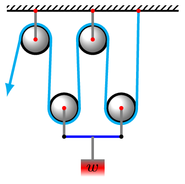

Given the two vectors \(\vec{A} = 3 \hat{i} + 4\hat{j} \) and \(\vec{B} = \hat{i}- 2\hat{j} + 4\hat{k}.\) What is their dot product?
2.
A horizontal force is given by the equation \(F = k x\text{,}\) where \(k = 100 N/m\text{.}\) How much work is expended by that force when moving an object from \(x = -1 m\) to \(x = +3 m\text{?}\)
3.
A force has the components \(F_{x} = A(x+y)\text{,}\)\(F_{y} = Bxy\text{,}\) where \(A = 2 N/m\) and \(B = 3 N/m^{2}\text{.}\) Find the work done by this force along the paths
from (0,0) to (1m,0) to (1m,2m),
from (0,0) to (0,2m) to (1m,2m),
from (0,0) to (1m, 2m) along a straight line.
4.
An object of mass 10 kg is lifted a vertical distance of 3 m and a horizontal distance of 4 m. How much work is done?
5.
A force of 100 N moves a block of mass 10 kg up a plane of length 2 m at an angle of \(30^{o}\text{.}\) If the force is parallel to the plane, if the block starts from rest, and if the coefficient of friction is 0.1, how much work is done
by the force,
by gravity, and
by friction.
How fast will the block be moving when it gets to the top?
6.
A force of 100 N at an angle of \(30^{o}\) above the horizontal moves a block of mass 10 kg along a horizontal surface a distance of 3 m. If the block starts from rest and if the coefficient of friction is 0.2, how much work is done
by the force,
by gravity,
by friction.
by the normal force, and
by the net force on the block.
Energy.
7.
A bullet of mass 10 g has a speed of 500 m/s.
What is its kinetic energy?
If it penetrates a block of wood a distance of 10 cm before coming to rest, what is the average frictional force stopping the bullet? A second bullet identical to the first is shot through a sheet of wood 5 cm thick.
With what speed does the second bullet exit the wood?
8.
How much energy would be required to lift a 70 kg man to a height of 100 m?
How much energy would be required to lift a 70 kg man to a height of 10,000 km?
9.
A spring requires a force of 100 N to stretch it a distance of 20 cm.
What is the force constant of the spring?
How much force is required to stretch the spring a distance of 50 cm?
How much energy is required to stretch the spring a distance of 0.5 m?
What is the potential energy of the spring when it is stretched 20 cm?
How much energy is required to stretch the spring from 20 cm to 50 cm?
10.
A block of mass 10 kg is pulled to the right at constant speed on a horizontal surface by a horizontal force of 10 N.
What is the coefficient of friction?
How much work is done in overcoming the friction?
11.
A water skier of mass 80 kg traveling at 15 m/s releases from tow and travels a distance of 50 m before starting to sink into the water.
If he begins sinking when his speed is 4 m/s, how much energy did friction consume before he began sinking?
If the skier is 1.8 m high and his center of gravity is in the middle of his body, how much energy is consumed by friction while he is sinking?
12.
A spring of mass 2 kg and spring constant 300 N/m is compressed a distance of 0.5 m and clamped in that position. When the clamped spring is 4 m above the ground traveling horizontally with a speed of 5 m/s find each of the following:
What is its kinetic energy?
What is its gravitational potential energy?
What is its elastic potential energy?
What is its total energy?
If the clamp holding the spring is released so the spring returns to its original length by the time the system falls all the way to the ground and comes to rest, find each of the following:
What is its kinetic energy?
What is its gravitational potential energy?
What is its elastic potential energy?
What is its total energy?
How much energy is turned into heat by the time the system comes to rest on the ground?
13.
A mass of 2 kg is placed against the end of spring compressed a distance of 50 cm as shown in the figure below. The system is released, the mass moves horizontally a total distance of 1 meter over a surface with a coefficient of kinetic friction of 0.2, slides up a smooth ramp of radius 25 cm, and then flies straight up a distance of 25 cm above the top of the ramp.

What is the equation for the total energy of the mass when it starts out?
What is the equation for the total energy of the mass when it reaches its highest point?
What is the equation for the amount of energy dissipated by friction?
What is the relationship between the above quantities?
What are the additional equations are needed to find the spring constant of the spring?
Where is the mass when it reaches its maximum speed?
What are the additional equations needed to find the maximum speed of the mass?
After the mass comes back down, where does it finally come to rest?
14.
A ball of mass 1 kg is dropped from a height of 2 m onto a spring of force constant 500 N/m. What is the maximum speed attained by the ball?
15.
A portion of a roller coaster is shaped like a sine wave according to the equation \(y = A \cos kx,\) where A = 50 ft and k = 0.04/ft. Assume that friction consumes approximately 10\% of the energy as the coaster moves from the high point to the next low point and that the coaster is moving at 10 ft/s at the top, find the speed of the coaster at the bottom.
16.
A rocket of mass 5 kg accelerates upward at a constant 4 g’s for 5 sec starting from rest. Assume the mass of the fuel is negligible so the mass of the rocket can be considered constant throughout the acceleration.
How much energy is imparted to the rocket during the first second?
How much energy is imparted to the rocket during the last second?
Is chemical energy that drives the rocket being expended at the same rate during the first second as during the last second?
Explain why answers a and b are not the same. Where does the extra energy go?
17.
A small pellet of mass m = 0.2 kg starts from rest at position A and slides down the smooth surface of the cylinder to position B. The radius R = 0.8 m. Use conservation of energy to determine the magnitude of the pellet’s velocity at position B if \(\theta = 45^{o}\text{.}\)

18.
A spring gun has a spring constant of 200 N/m and shoots a projectile of mass 500 g. If the spring is compressed a distance of 10 cm into the barrel of the gun and the friction force in the gun barrel is 4 N, how high will the projectile rise above the tip of the gun barrel if
the gun is shot straight up, and
if the gun is aimed at \(30^{o}\) above the horizontal.
19.
A rock of mass 200 g is placed in a sling and whirled in a vertical circle of radius 50 cm. The rock is released when traveling vertically and rises to a height of 4 m above its starting point.
What was the velocity of the rock when it was released from the sling?
What was the tension in each of the two strings of the sling immediately before the rock was released?
Assuming no energy is added to the rock while it is whirling in the circle, what was the velocity of the rock at the bottom of the circle?
What is the maximum force that the hand must exert on the sling to keep the rock going in its circle?
What is the minimum force required to keep the rock going in its circle?
Power.
20.
An elevator lifts a load of 1000 lb to a height of 300 ft in 30 s.
What is the horsepower output of the motor running the elevator?
How many watts of electricity are required to run the motor?
21.
A strongman sitting in the back of a motor boat of mass 2000 kg is holding a rope tied to the front of a canoe with its contents of 500 kg. The motor boat starts out towing the canoe and eventually attains a constant speed of 10 m/s for a distance of 100 m. During that time the man feels a constant tension in the tow rope of 100 N.
How much energy does the man expend while towing the canoe?
How much energy does the motor boat expend while towing the canoe?
How much power is required to tow the canoe?
How much power is converted into heat through friction?
22.
An electric motor starts revving up, consuming energy according to the equation \(W = C t^2\text{,}\) where \(C = 200 J/s^{2}\text{.}\)
How long does it take for the engine to consume 1000 J of energy?
What is the equation giving the power output of the motor?
How long does it take for the motor to develop a power output of 1 hp?
23.
The power required to move an object is \(P = K t^{3}\text{,}\) where \(t \) is the time and the constant \(K = 3 W/s^{3}\text{.}\) How much energy is required to move the object during the first 4 seconds?
24.
A simple machine requires a force of 3 N moving through a distance of 4 m to lift a weight of 10 N through a height of 1 m.
What is the AMA of the machine?
What is the IMA of the machine?
What is the efficiency of the machine?
25.
The pulley system shown at right requires a tension of 10 lb to lift a weight of 30 lb.
What is the actual mechanical advantage of the machine?
If there were no friction in the machine, how much weight could the 10 lb force lift?
What is the ideal mechanical advantage of the machine?
How far must the free end of the rope move in order to lift the weight 3 ft?
What is the efficiency of the pulley system?
26.
A lever system has a AMA = 9 and an IMA = 10. How much work would be required to use this machine to lift a 200 lb weight a height of 2 ft?
27.
The belt on an automobile engine transfers power from the engine pulley to the alternator pulley.
If the diameter of the engine pulley is 15 cm and that of the alternator pulley is 10 cm, what is the IMA of the pulley system?
If the AMA of the pulley system is 0.6, what is the efficiency of the pulley system?
If the energy conversion from mechanical energy to electrical energy in the alternator is \(90\%\text{,}\) how much power must the motor deliver in order to generate 50 Watts of electrical power?
28.
Find the value of IMA for the given figure.

Collision.
29.
A force of 1000 N is applied to an object that travels a distance of 10 m in 3 s. What is the impulse of the force?
A force rises linearly from zero to 106 Newtons in two milliseconds and then decreases linearly back to zero in the next two milliseconds. What is the total impulse of that force.
A force is described mathematically by the equation \(F = F_{o}[1 - (t - 1)^{2}]\text{,}\) where \(F_{o} = 100 N\) and t is expressed in seconds and ranges from zero to 2 seconds. What is the impulse of this force?
30.
A 500 g hammer traveling at 30 m/s hits a nail driving it into a block of wood during a period of time of 1 ms.
What is the change in momentum of the hammer if it does not bounce?
What is the change in momentum of the hammer if it bounces back at 20 m/s?
What is the average force stopping the hammer if it doesn’t bounce?
What is the average force if it bounces back at 20 m/s?
Use energy considerations to find out how far the nail moves in each case.
31.
A block of mass 2 kg moving at 10 m/s collides with a second mass of 1 kg at rest. How fast does each mass move afterward
if the collision is perfectly inelastic, and
if the collision is perfectly elastic.
32.
A ball is dropped from a height of 2 m and rebounds to a height of 1.5 m.
What is the coefficient of restitution between the ball and the table?
How high would a superball bounce if its coefficient of restitution is 0.95?
33.
A block of mass 1 kg moving to the right with a speed of 1 m/s strikes a second block of mass 2 kg moving to the left with a speed of 2 m/s. The first mass bounces back with a speed of 2 m/s.
What is the velocity (magnitude and direction) of the second mass after the collision?
What is the coefficient of restitution of the collision?
How much energy was lost during the collision?
34.
A machine gun shoots 3 times per second. Each bullet has a mass of 20 g and the muzzle velocity is 300 m/s.
What is the momentum of each bullet?
What is the average recoil force acting on the machine gun?
If the gun is mounted on a 1,000 kg boat whose friction through the water is proportional to velocity according to the equation f = cv, where c = 10 kg/s, then how fast could the machine gun make the boat travel across the water?
35.
A block of mass 2 kg moving at right at 10 m/s collides with a 4 kg block at rest. If the coefficient of restitution is 0.5,
what will be the velocity of each block after the collision?
How much energy is lost in the collision?
If the collision lasts 10 ms, what is the average force between the two blocks?
36.
A pool ball traveling along the x-axis at \(2 m/s\) strikes a second ball of equal mass and glances off at an angle of \(30^{o}\) above the x-axis. If the collision is perfectly elastic,
what is the direction that the second ball moves after the collision?
What is the speed of each ball after the collision?
37.
A bullet of mass 50 g traveling at 400 m/s due north strikes a rock of mass 500 g at rest and ricochets off the rock going due east. The rock recoils in a direction \(30^{o}\) west of north.
What is the speed of the ricochetting bullet?
What is the recoil speed of the rock?
How much energy was lost in the collision?
What was the coefficient of restitution between the bullet and the rock?
38.
A car of mass 700 kg moving west at a speed of 72 km/h makes an inelastic collisions with a truck initially moving northward. If the tangled mass of car and truck slides off in the north-west direction a distance of 10 m when the coefficient of friction is 0.8, what was
the mass of the truck,
its speed before the collision,
the energy loss during the collision,
the average force between the car and truck during an impact lasting 0.1 s, and
the amount the car/truck combination is compressed?
39.
A bullet of mass 0.1 kg moving horizontally passes through a wooden block of mass 10 kg initially at rest and looses 90\% of its kinetic energy. The recoiling block slides a distance of 1 m on a horizontal surface of friction constant 0.3 before coming to rest. What was the initial speed of the bullet.
40.
A block of wood of mass 1 kg is balanced on the end of a pistol barrel and the pistol is fired. The block of wood flies upward a distance of 1 m with the bullet embedded inside. What is the muzzle velocity of the bullet if its mass is 10 g?
41.
A 0.1-kg mass of putty drops from a height of 1 m onto a platform of 1 kg setting on a spring of constant 100 N/m. The putty sticks to the platform causing it to recoil downward and compress the spring. How much is the spring is compressed before it comes to rest again.
42.
A spherical ball of mass 1 kg and radius 3 cm is attached to a wire of length 2 m to form a pendulum. The top of the pendulum is attached to a wall near the top. The wire is pulled straight out horizontally and the ball is released from rest. The ball strikes the wall and rebounds a horizontal distance of 1 m. The wall is dented a distance of 1 cm.
What is the speed of the ball when it strikes the wall?
What is the speed of the ball when it leaves the wall?
How much energy did the ball lose?
What is the average force exerted by the ball on the wall?
What is the change in momentum of the ball?
How long was the ball in contact with the wall?
43.
A 500 N boy sitting in a stationary 90 N wagon is start throwing bricks out of the wagon. If the boy has three bricks weighing 45 N each and throws them with a horizontal velocity of $3 m/s$ relative to the wagon, determine the velocity he attains
if he throws the bricks one at a time and
if he throws them all at once.
44.
A bullet of mass m penetrates a block of mass M lying on a frictionless table. If the initial velocity of bullet is \(v_{1}\) and it exits form the block with velocity \(v_{2}\text{,}\) find the time taken by the block to fly off the table if it is at a distance L from the edge of the table. If the table has a height h how far from the edge of the table will it land?